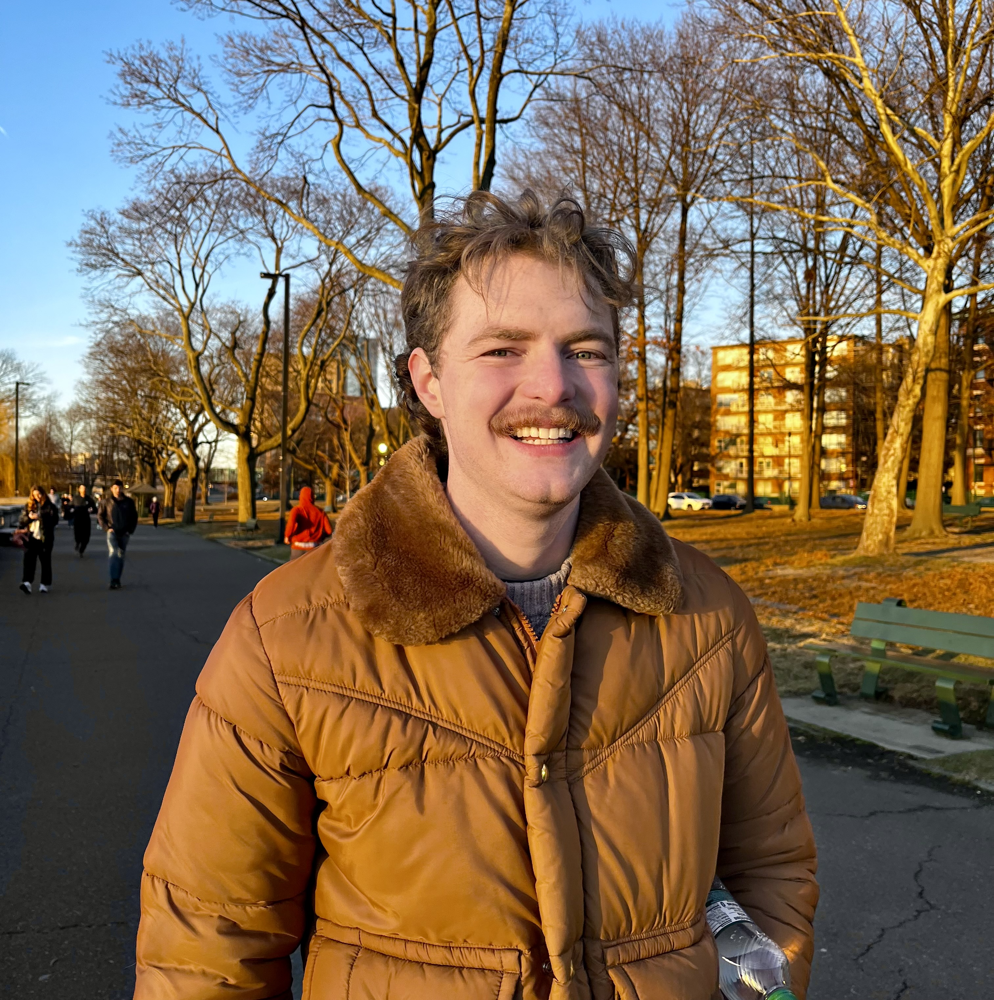
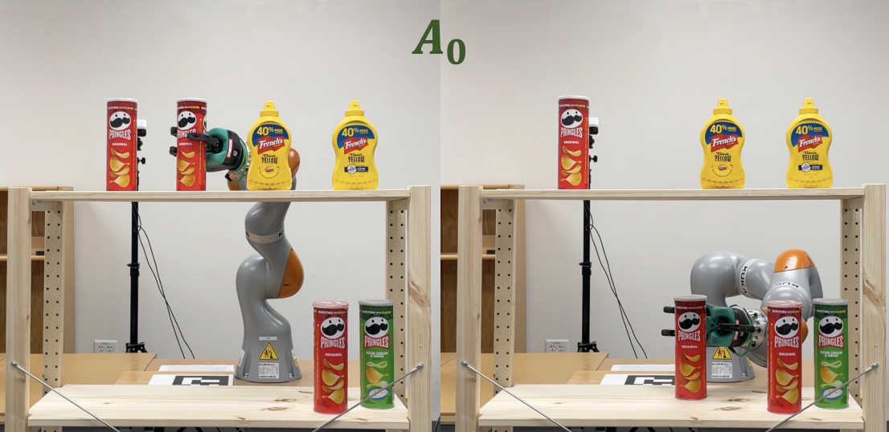

About Me
I'm a PhD Student in the Helping Hands Lab at Northeastern University, advised by Prof. Rob Platt. I research robotic manipulation, focused on methods for creating more skillful, reliable, and general robots.
I completed my undergraduate studies at The University of Utah, earning degrees in Computer Engineering, Applied Math, and Computer Science. There I worked with Prof. Tucker Hermans, studying planning methods for manipulation.

Contact
Email: crawfordtaylor.n (at) northeastern.edu
Publications
